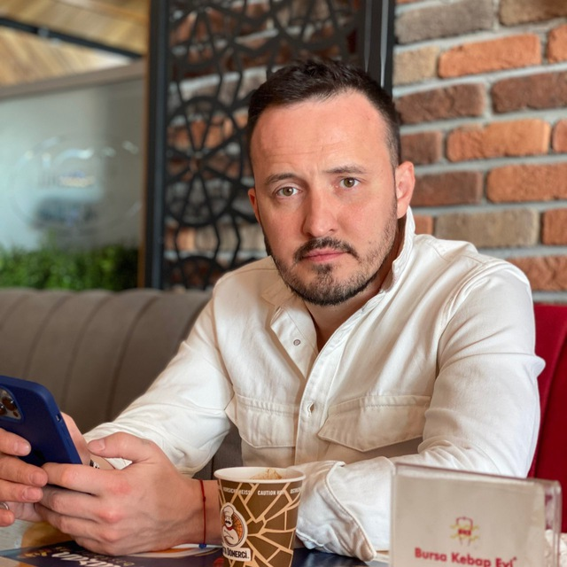
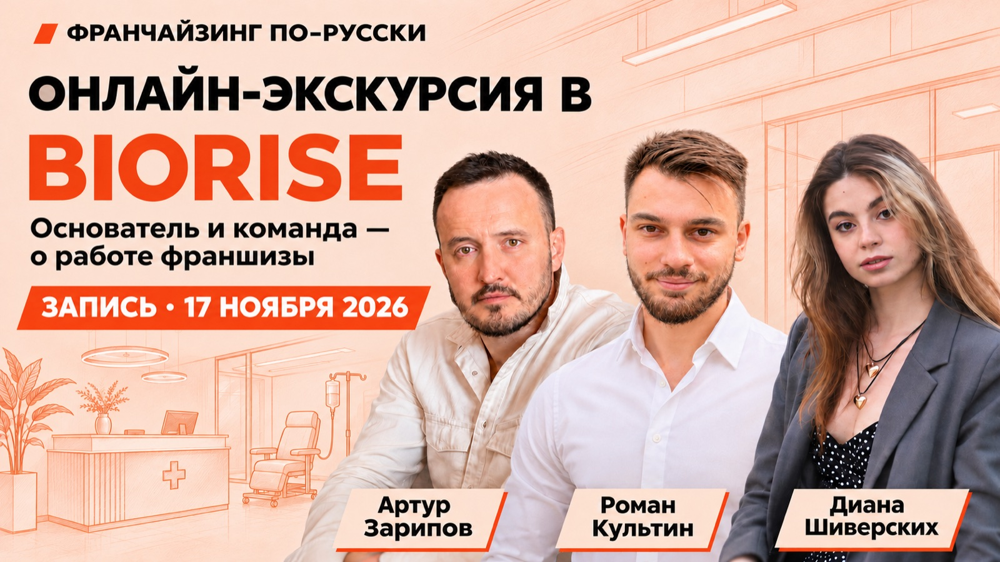
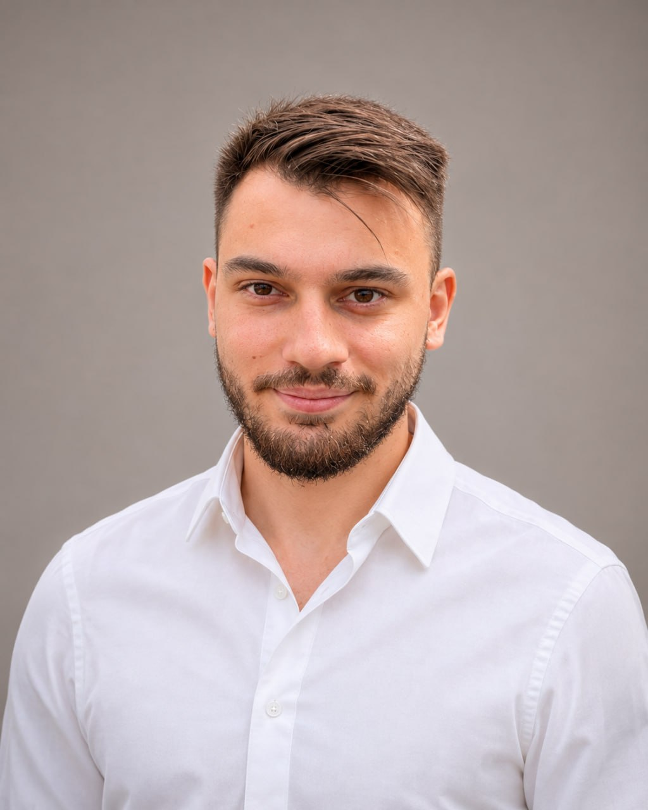
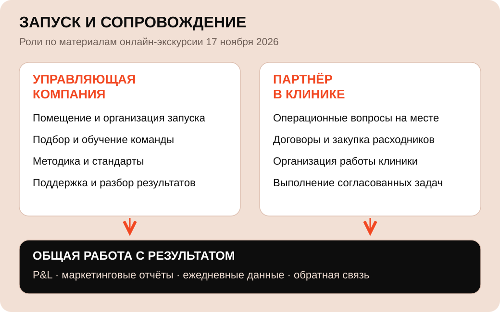
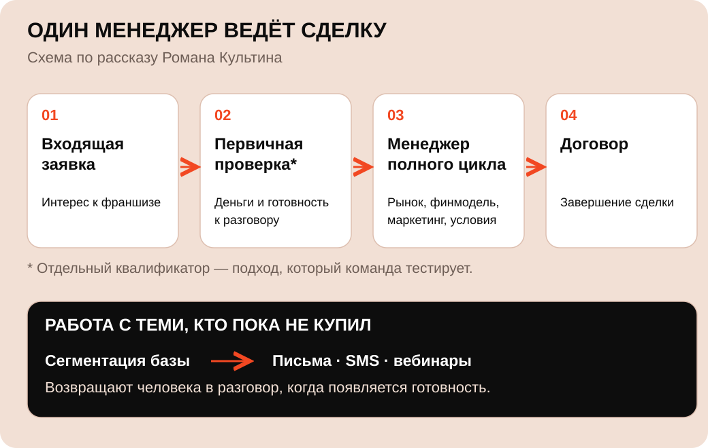

Артур Зарипов
Основатель БИОРАЙЗ
Кто отвечает за открытие клиник, как сопровождают партнёров и почему после пересборки отдела продаж в команде осталось пять менеджеров вместо четырнадцати.

Что происходит во франшизе после продажи договора? Кто ищет помещение, нанимает врачей, разбирает отчётность и помогает партнёру, если клиника работает не по стандартам? 17 ноября на онлайн-экскурсии в БИОРАЙЗ мы прошли по этим вопросам вместе с командой проекта.
Получился разговор о конкретных процессах: от разделения задач при запуске до ежедневных отчётов и работы с базой потенциальных франчайзи. Ниже — основные выводы и две схемы. Подробности, вопросы участников и примеры команды остались в полной записи в чате «Масштаб».

Основатель БИОРАЙЗ

Коммерческий директор
Директор сопровождения и запуска партнёров
Ведущие — Семён Сарапулов, Ярослава Токарева и Александр Долгов.
Цифры приведены со слов команды на момент встречи. Подробности пересборки отдела продаж — ниже.
Открытие медицинской клиники требует участия нескольких специалистов. Команда рассказала, что УК организует подбор помещения, работу по лицензированию, подбор и обучение сотрудников. На стороне партнёра остаются действия на месте: подписание документов, взаимодействие с проверяющими и дальнейшие операционные вопросы.
Раньше менеджер запуска участвовал сразу во всём, включая найм. После пересборки подбором персонала занимается HR, а менеджер концентрируется на проведении проекта через этапы открытия. По словам Дианы, в отделе запуска стало два менеджера вместо четырёх. При этом в работе находились около 70 проектов на разных стадиях — от поиска помещения до открытия. Это размер портфеля, а не число открываемых за месяц клиник.
Сам найм тоже превратился в отдельную большую задачу. Диана привела цифру за октябрь: обработали около 13 тысяч кандидатов на медицинские и административные позиции. Такой поток нельзя просто добавить к остальным обязанностям менеджера запуска.

Работа с партнёром включает разбор доходов и расходов, маркетинговых отчётов и ежедневных данных от администраторов. Параллельно есть общение по текущим вопросам: медицинским, административным и маркетинговым. Для разных тем подключаются специалисты соответствующего направления.
Соблюдение стандартов проверяют через отчётность, прослушивание звонков и тайных покупателей. Когда находят проблему, команда созванивается с партнёром, разбирает, что не сделано, согласует задачи и сроки. По рассказу Дианы, до расторжения стараются доходить редко, но нарушение стандартов требует конкретных действий со стороны партнёра.
На встрече также обсудили собственную медицинскую информационную систему и CRM: в ней хотят объединить финансы, планы и другие данные клиники. На момент разговора система ещё готовилась к внедрению. Автоматическая расшифровка и анализ врачебных приёмов тоже обсуждались как направление разработки, а не как уже работающий во всей сети инструмент.
Что можно забрать себе: проверить, какие данные УК получает регулярно, кто разбирает отклонения и как договорённости после разговора с партнёром превращаются в выполненные задачи.
Роман рассказал о переходе к менеджерам полного цикла. В прежней конструкции клиента передавали между сотрудниками. В новой один менеджер знакомится с человеком и ведёт его до подписания договора. Команда рассчитывает таким образом сохранить контакт и повысить качество переговоров.
Отдел сократился с 14 менеджеров до пяти. Здесь есть существенная деталь: по словам Романа, прежние 14 продавали примерно на 10% больше, чем нынешние пять. То есть объём продаж всё-таки отличается. Этот эпизод полезно разбирать вместе с затратами отдела и качеством работы менеджеров.
Модель продолжают менять. Из-за качества входящего трафика и нагрузки на менеджеров команда тестирует отдельного квалификатора. Его задача — быстро проверить наличие денег, интерес и готовность продолжить разговор. Глубокий разбор бизнеса и переговоры остаются у менеджера. Это уточнение важно: полный цикл продажи не означает, что специалист обязан самостоятельно обрабатывать весь неотфильтрованный поток.
На первых Zoom-встречах разбирают рынок, финансовую модель и дальнейший маркетинг. По словам Романа, клиент должен получать содержательную работу уже на этом этапе. В обычном для команды цикле сделки есть повторные разговоры, изучение документов и согласование условий — не только одна презентация.

Короткая активная сделка и работа с базой живут в разных ритмах. Роман говорил примерно о месяце на сделку и о базе из 12,5 тысячи ранее квалифицированных заявок. Люди из этой базы могли интересоваться франшизой полгода или год назад. Это не означает, что каждый из них готов покупать сейчас.
Базу сегментируют и используют разные каналы: письма, SMS, обзвоны и приглашения на вебинары. Для вебинаров есть отдельная ветка коммуникаций. На сами эфиры приглашают не только из текущей воронки менеджеров, но и из накопленной базы.
Вебинар помогает увидеть команду и действующих франчайзи, задать вопросы и вернуться к решению об открытии. Роман отдельно отметил роль сильных спикеров: к таким встречам должны быть готовы и собственник, и руководители направлений, и партнёры сети.
В разговоре несколько раз вернулись к результату новой клиники в первый месяц. Александр Долгов поделился опытом своих проектов: когда отдел открытия отвечает за выручку старта, он внимательнее относится и к помещению, и к подготовке маркетинга заранее. Это опыт Александра, а не уже внедрённый стандарт БИОРАЙЗ.
Команда БИОРАЙЗ рассказала о своих шагах: маркетинг начинают ещё на запуске, собирают предварительные записи на техническое и официальное открытие. Артур привёл пример собственной клиники, где акция с бесплатными анализами, по его словам, привлекла около 1,5 тысячи заявок. При таком отклике возникла и большая нагрузка на администраторов.
Отсюда разговор перешёл к тому, что происходит после заявки: как администратор общается с посетителем, насколько внимательно работает команда, возвращается ли человек. Диана отметила, что стали больше работать с существующей базой и клиентским опытом. Рекламный канал и работа внутри клиники здесь связаны напрямую.
Большая часть нынешних менеджеров работает в компании несколько лет. Объясняя это, Роман говорил не только о процентах и дополнительных бонусах, но и о нормальных отношениях между отделами, понятном заработке и возможности отдохнуть при выгорании.
Если человек устал, с ним обсуждают перерыв и передачу задач. По рассказу команды, сотрудникам дают удобные инструменты для работы и не строят общение на постоянном давлении. Это особенно значимо для модели, где один менеджер ведёт сделку целиком: качество такой работы зависит от устойчивости конкретного человека.
Материал подготовлен по расшифровке онлайн-экскурсии 17 ноября 2026 года. Это конспект опыта, которым поделились участники встречи; схемы составлены редакционно по обсуждению. В записи больше деталей и ответов на вопросы.
Запись на 1 час 4 минуты уже в базе знаний закрытого чата «Масштаб». Внутри — весь разговор с Артуром Зариповым, Романом Культиным и Дианой Шиверских, вопросы участников и другие записи сообщества.
Первый месяц по специальной цене. Далее — 5 000 ₽/мес. Предложение действует до .
Оформить подписку и смотретьУже в «Масштабе»? Открыть запись экскурсии →